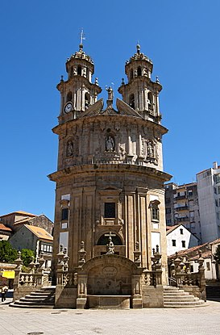
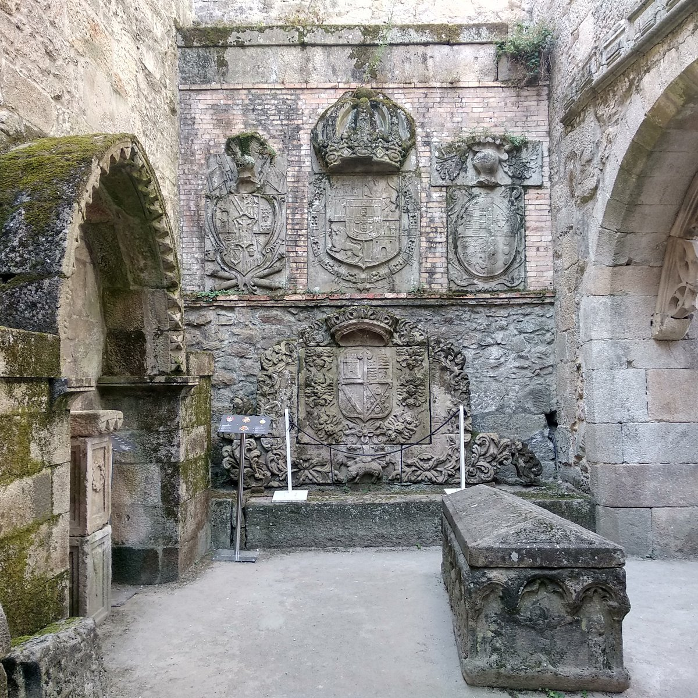
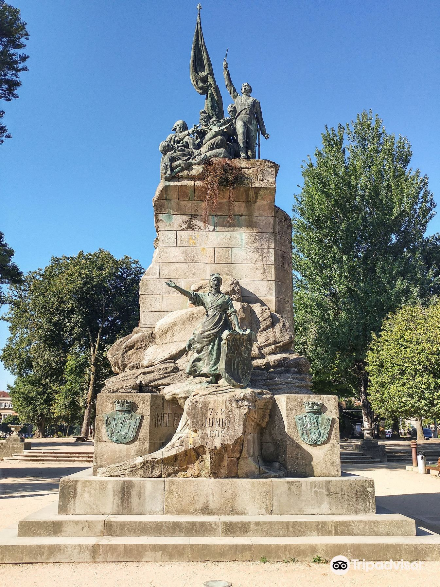

Luis Ramallo Vidal
Última actualización: 22/10/2022. 19:18
La iglesia de la Virgen Peregrina es un edificio religioso localizado en la ciudad de Pontevedra, en Galicia (España). Consiste en una capilla de planta en forma de vieira que está situada al pie del Camino de Santiago Portugués.
Se empezó a construir en 1778 y se trata de una de las edificaciones más simbólicas y relevantes de la Ciudad de Pontevedra. Está dedicada a la Virgen que, según la tradición, guiaba a los peregrinos desde Bayona hasta Santiago.
Las Ruinas de Santo Domingo, situadas en la ciudad de Pontevedra, son los restos que se conservan de un antiguo convento gótico construido por los dominicos en el siglo XIII. Forma parte del Museo Provincial de Pontevedra junto a otros 5 edificios, entre los que están el edificio de Castro Monteagudo y el edificio Fernández López, y fue declarada junto a ellos, Bien de Interés Cultural en el año 1895.
En la actualidad se conservan de esta antigua edificación la cabecera porticada de la iglesia con cinco ábsides poligonales y un muro lateral en el que se observa un rosetón. Además de estos restos, también se conservan piezas con más valor arqueológico, sin embargo, estos restos se guardan en el Museo de Pontevedra para evitar su deterioro al aire libre.
Morillo, organizado ya su ejército, decidió marchar hacia la ciudad de Pontevedra. Las tropas francesas se retiraron a Santiago de Compostela al enterarse del avance español, donde fueron reforzadas con otras tropas llegadas de La Coruña. Tras el nuevo vuelco de la situación, Morillo recibió el encargo de cortar el avance francés y decidió plantar batalla en Puentesampayo. Las tropas españolas cortaron dos arcos del puente sobre el río Verdugo y se atrincheraron en la orilla sur con la intención de detener el avance del Cuerpo de Ejército, mandado por el mariscal Michel Ney. Los defensores contaban con dos cañones facilitados por Antonio Gago, de Marín, y tres provenientes de Redondela. Al mando de la defensa del paso estuvo el alférez de navío Juan O'Dogherty Browne.
El 7 de junio, el mariscal Ney, al mando de 10 000 hombres, realizó un ataque frontal contra el puente cortado, pero fue rechazado con fuertes pérdidas. Al día siguiente, Ney ordenó a una parte de sus fuerzas que atacaran en Caldelas, dos leguas río arriba, cuyo puente no había sido destruido. Al otro lado del río, los paisanos de El Morrazo, Pontevedra y La Lama se atrincheraron con piedras y troncos de árboles.
El día 9, Ney convocó consejo de sus oficiales y decidió la retirada. Esta fue penosa porque el ejército francés resultó acosado por los guerrilleros que atacaban y mataban a los soldados rezagados. Las tropas de Ney se reunieron en Lugo con las de Jean de Dieu Soult que habían tenido que abandonar Portugal, y todos juntos se retiraron de Galicia en julio de 1809. El choque supuso la definitiva evacuación de Galicia por parte del ejército napoleónico y la creación de un nuevo frente para sus armas.
Derechos de Autor